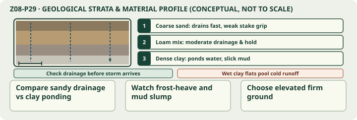

Z08-P29 · Rocks, minerals and materials · New manuscript
Sand, Silt and Loam Drainage Behavior for Site Assessment
Apply basic soil texture recognition to predict rainwater ponding, frost heave, and stake-holding limits without implying structural ratings.
When it applies · Campsite drainage review, tarp anchoring, and muddy-ground hazard avoidance.
Equipment · Visual surface check, existing trail cuts.

Actions
- Recognize coarse sandy and gravelly outwash by fast water infiltration but poor stake-holding friction when dry or saturated.[R02, R17]
- Recognize dense clay and silt lake-plain soils by slow drainage, slick mud, surface ponding after rain, and severe freeze-thaw heaving.[R02, R17]
- Pair soil texture observations with terrain slope and flood history rather than relying on dry fair-weather soil firmness.[R02, R17, E01]
Failure recognition · Pitching shelter on flat clay flats or loose wet sand causes overnight pooling or pulled shelter anchors during storms.[R17, E01]
Verify · Site review checks both elevated drainage slope and soil-holding reliability before setting camp.[R17, E01]
Stop or change course · Stop camping on saturated clay basins, undercut sandy banks, or soft mud margins prone to rapid flooding.[R16, R17]
Evidence and editorial notes
- E01 · Minnesota DNR · Safety in State Forests (current web edition)
- Section: Before your trip and while visiting · Conditions: State-forest travel and backcountry planning
Support: Know the route, check conditions, carry navigation and safety equipment and share trip details.
Limitations: Conditions and trail maintenance vary seasonally across forest units. · Conflicting evidence: None; aligns with NPS-H.
Editorial note: Foundation for trip planning and pre-departure risk checks. · Specialist reviewer: Land management and search and rescue
Primary source · checked 2026-11-24 - R02 · Minnesota DNR · Minnesota Geology and Glacial History Overview (Current web edition)
- Section: Glacial drift and landscape materials · Conditions: Glacial till, moraines, outwash, and lake-plain deposits
Support: Glacial transport mixes erratics and cobbles from distant source formations across Minnesota soils and stream beds.
Limitations: Cobble location does not prove local bedrock origin or uniform internal stone integrity. · Conflicting evidence: None noted.
Editorial note: Separates erratic cobbles from bedrock strata. · Specialist reviewer: Quaternary geologist
Primary source · checked 2026-11-25 - R16 · Minnesota DNR · Rocks and Minerals of Minnesota Educational Guide (Current web edition)
- Section: Sedimentary limestone, sandstone, and shale permeability · Conditions: Southeastern Minnesota karst, bluff, and river-valley sedimentary strata
Support: Sandstone, limestone, and shale differ sharply in cementation, porosity, and fissility, governing weathering and cliff instability.
Limitations: Karst bluffs and fractured shales shed rockfall unpredictably; visual inspection cannot certify slope or load stability. · Conflicting evidence: None noted.
Editorial note: Covers Upper Midwest sedimentary rock hazards. · Specialist reviewer: Engineering geologist
Primary source · checked 2026-11-25 - R17 · Minnesota Geological Survey (UMN) · Minnesota Geological Survey Maps and Regional Geology (Current web edition)
- Section: Clay-rich glacial lake sediments and plasticity limits · Conditions: Glacial lake plains and alluvial clay deposits
Support: Fine clay particles confer wet plasticity and shrinkage upon drying, unlike gritty silt or sand.
Limitations: Field ribbon/roll checks only estimate texture; they do not verify thermal shock resistance, firing integrity, or freedom from soil toxins. · Conflicting evidence: None noted.
Editorial note: Bounds Z08 clay identification vs cookware claims. · Specialist reviewer: Soil scientist and ceramic/materials specialist
Primary source · checked 2026-11-25
Source lineage · New manuscript (Z08 P16 soil properties) · Classification · New manuscript.